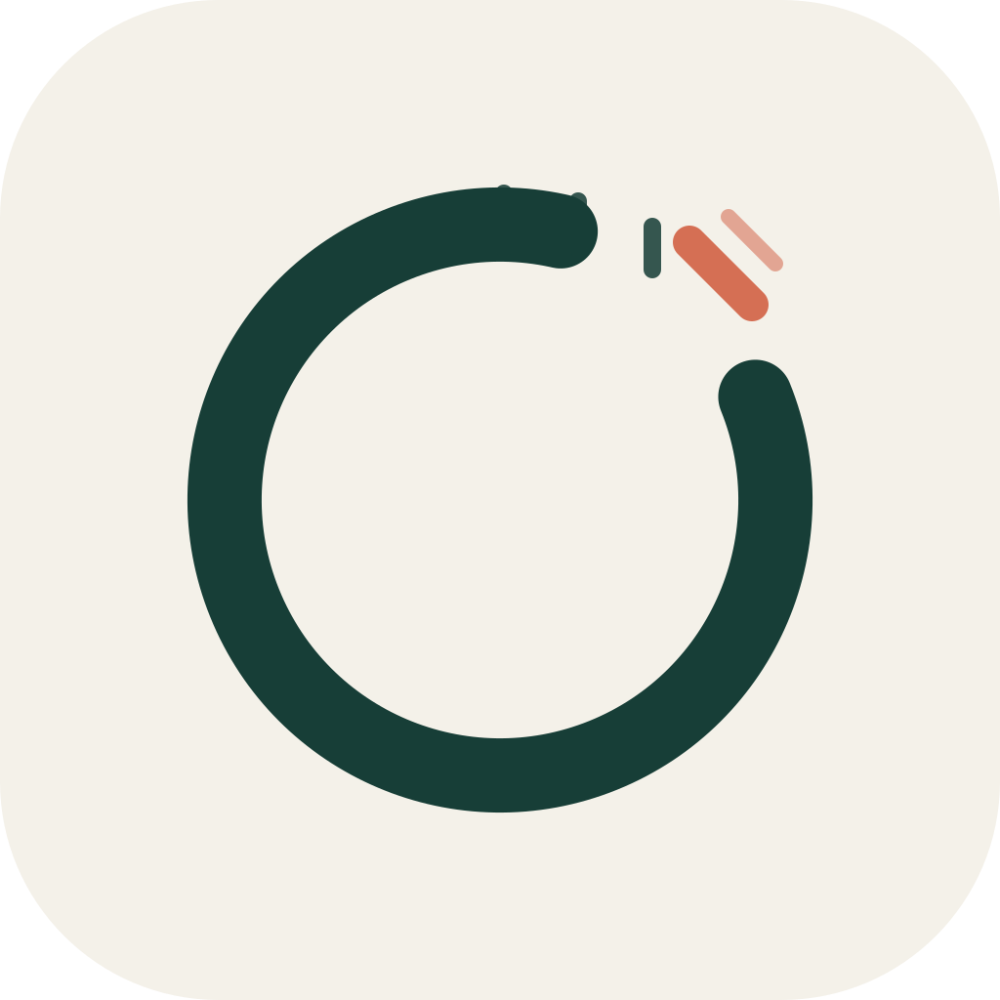
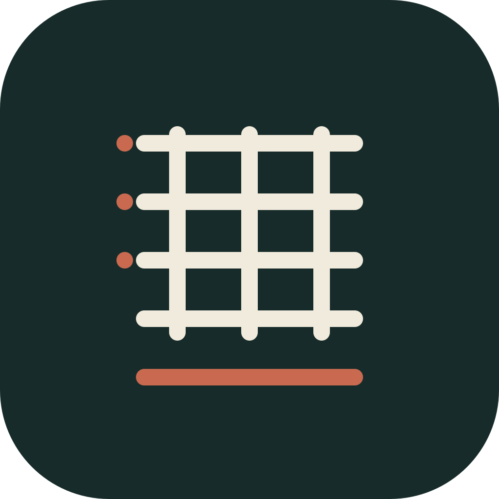
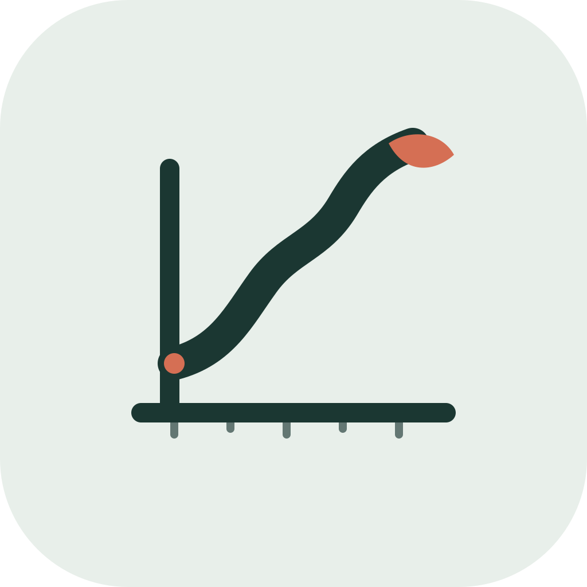

01 / modern mark
未满之圆
接近闭合的圆环代表持续积累，缺口表达留有余地。最适合做长期品牌主标。
应用商店 · 宣传海报 · 动效启动页
Product use
9:41● ● ●
小满记账今天也留一点余地
本月结余¥ 3,428.60较上月 +8.4%
餐饮- ¥ 42.00
交通- ¥ 18.50
工资+ ¥ 6,800
概览记录统计我的
黑白小尺寸仍清晰
三种不依赖“存钱罐”的品牌符号。它们都保留小满的克制、成长和生活感，并适配桌面图标、启动页与宣发物料。

接近闭合的圆环代表持续积累，缺口表达留有余地。最适合做长期品牌主标。

从“满”的结构提炼格线与水滴，像印章，也像账本。文化识别度最高。

用稳定上升的曲线替代“暴涨箭头”，尾端的种子代表生活和资产一起生长。